اضغط على المحافظة لرؤية معلوماتها
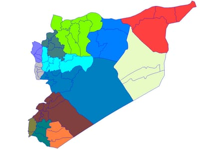
بداية معلومات المحافظات
جميع محافظات سوريا
دمشق
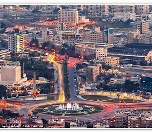
دمشق هي عاصمة سوريا وأحد أقدم المدن في العالم...
- الموقع: جنوب غرب سوريا
- عدد السكان: حوالي 2 مليون نسمة
- المعالم: قلعة دمشق، الجامع الأموي، سوق الحميدية
حلب
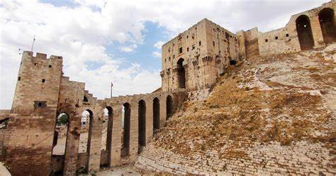
حلب هي ثاني أكبر مدينة في سوريا...
- الموقع: شمال غرب سوريا
- عدد السكان: حوالي 2.5 مليون نسمة
- المعالم: قلعة حلب، سوق حلب، الجامع الكبير
حمص
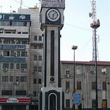
حمص تقع في وسط سوريا وتعد من المدن الكبرى...
- الموقع: وسط سوريا
- عدد السكان: حوالي 1.5 مليون نسمة
- المعالم: قلعة الحصن، جامع خالد بن الوليد
حماة
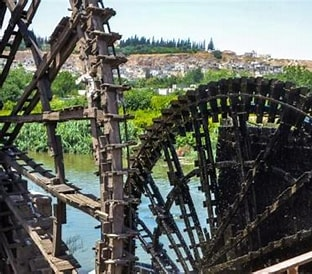
مدينة النواعير التاريخية...
- الموقع: وسط سوريا
- عدد السكان: حوالي 1 مليون نسمة
- المعالم: النواعير، قلعة حماة
اللاذقية
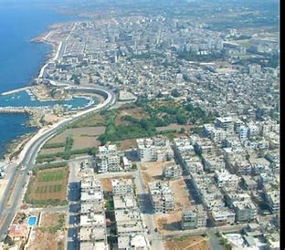
مدينة ساحلية على البحر الأبيض المتوسط...
- الموقع: غرب سوريا
- عدد السكان: حوالي 1.5 مليون نسمة
- المعالم: الكورنيش، جبل النبي يونس
طرطوس
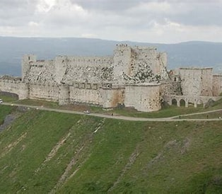
مدينة ساحلية تقع جنوب اللاذقية...
- الموقع: غرب سوريا
- عدد السكان: حوالي 1 مليون نسمة
- المعالم: جزيرة أرواد، شاطئ طرطوس
إدلب
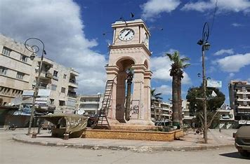
تقع في شمال غرب سوريا وتشتهر بمناخها المعتدل...
- الموقع: شمال غرب سوريا
- عدد السكان: حوالي 1.5 مليون نسمة
<
li>المعالم: جبل الزاوية، كنائس أثرية
دير الزور
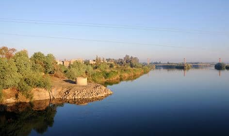
مدينة تقع شرق سوريا على نهر الفرات...
- الموقع: شرق سوريا
- عدد السكان: حوالي 1 مليون نسمة
- المعالم: الجسر المعلق، ضفاف الفرات
الرقة
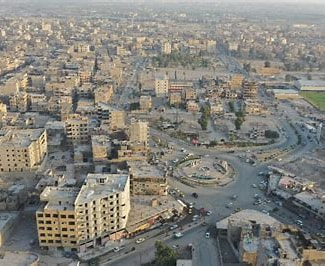
مدينة على نهر الفرات وكانت عاصمة الدولة العباسية...
- الموقع: شمال شرق سوريا
- عدد السكان: حوالي 900 ألف نسمة
- المعالم: سور الرقة، نهر الفرات
الحسكة
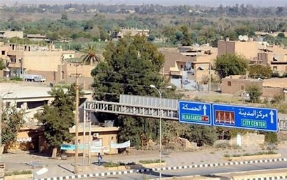
مدينة تقع في أقصى الشمال الشرقي...
- الموقع: شمال شرق سوريا
<
li>عدد السكان: حوالي 1.2 مليون نسمة
- المعالم: نهر الخابور، مواقع أثرية
درعا
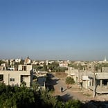
مدينة جنوبية تعتبر من أقدم مدن سوريا...
- الموقع: جنوب سوريا
- عدد السكان: حوالي 1 مليون نسمة
- المعالم: تل الأشعري، آثار بصرى
السويداء
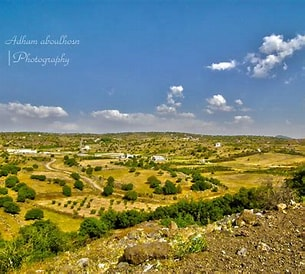
مدينة جبلية جنوب سوريا، يقطنها غالباً أبناء الطائفة الدرزية...
- الموقع: جنوب سوريا
- عدد السكان: حوالي 500 ألف نسمة
- المعالم: جبل العرب، آثار رومانية
القنيطرة
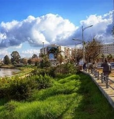
مدينة تقع في الجولان السوري المحتل...
- الموقع: جنوب غرب سوريا
- عدد السكان: أقل من 100 ألف
- المعالم: آثار المدينة المدمرة، الطبيعة الجبلية